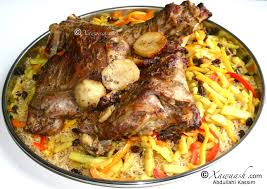

Home
Bariis

Bariiskan waa cunto aad u macaan.
Ingredients
- 2 koob oo bariis ah
- 4 koob oo biyo ah
- 1 qaado oo cusbo ah
- 1 qaado oo saliid saytuun ah
steps
- Bariiska si fiican u dhaq ilaa biyaha ka noqdaan kuwo nadian
- Ku rid bariiska, biyaha, cusbada, iyo saliidda digsi weyn oo ku dabool dabka
- Kuleyl ilaa biyaha ay karkaraan, ka dibna hoos u dhig dabka oo ku daa inuu si tartiib ah u kariyo ilaa biyaha ay ka dhammaanayaan oo bariisku uu noqdo mid jilicsan (qiyaastii 15-20 daqiiqo)
- Marka bariisku bislaado, ka qaad dabka oo ku daa inuu nasato oo daboolan yahay muddo 5 daqiiqo ah ka hor inta aan la adeegsan
- U adeegso bariiska kulul oo leh suugo, hilib, ama khudaar